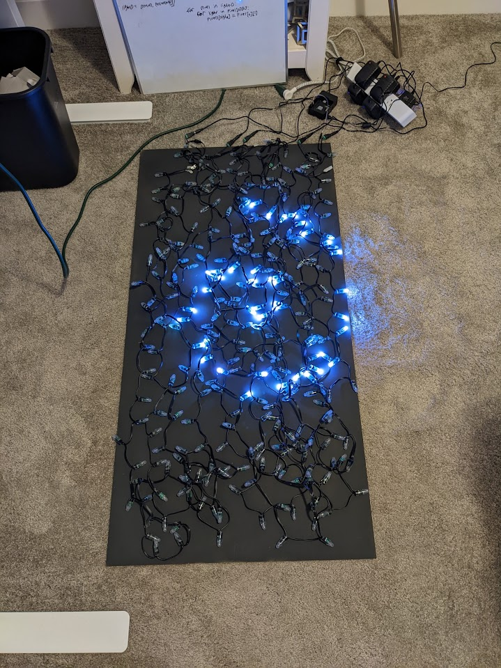
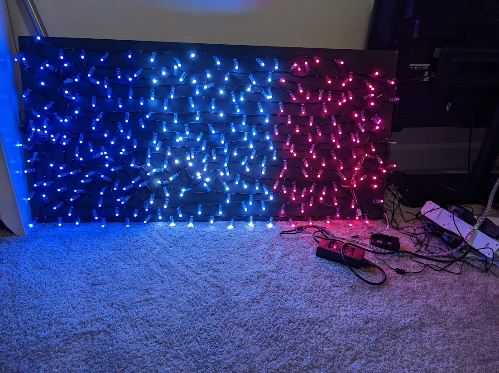

Pixeling
So, after creating the spiral and its animated counterpart, I decided to take on a
new challenge. Up until this point, I had stayed pretty much in the
known territory of what you can do with lights like this. Mathematical patterns have been delved deeper
into by many other people and there is a whole follow-up video to the
video I linked in the introduction that is a livestream that tests a bunch of user submitted code. All of
this to say that this was a pretty saturated industry.
What I wanted to do was turn the lights into a display. A dumbed-down version of what you are using right
now. I had no idea what the code would look like and I only
found a few instances of people doing this online.
There were several problems I needed to tackle to get pixeling to work correctly, least
of which was the material the lights were on.
However, despite the fact that I only implemented a solution to this after getting some prototype code
working, I think that it would be good to start with this.
Taking photos of the LEDs is unpredictable at the best of times. The lights could be facing the wrong way,
you could be taking all of your photos on a reflective white background
(hint hint), or you could have some random object that your lens picks up as perfect white for some
reason. Gaussian blur can only take me so far and the smallest error can
cost me a whole 10 minutes of my life. For this reason, I decided to make a black background for the
lights.
I also wanted to create a more crystalline structure for the lights that would grant more consitency on
lighting density. For this reason, I took the highly
in-depth and precise route of stapling the lights to a board that was painted black.



The first picture is the board drying, the second is lights when they were just
flung and slightly organised on the board (as well as mapped)
and the last picture is of the crystlline lights structure functioning as a laser pointer. The stapling
took a while to do and taught
me that the electronics were pretty resilient (I stapled straight through the wire 3 times) and were
pretty unlikely to malfunction even when an
unexpected piece of metal was added to the circuit (staple).
I figured out pretty quickly when trying to organise the lights that it was not going to be as easy as I had hoped. I wanted all of the power connectors to be on the same end of the board so that the cable management was easier but this created a lot of difficulty. The lengths of the strings of lights were just not the right length to go the length of the board an interger number of times. For fun (using a program that I will talk about later) I have created visualiser for the way that the lights are lain out. There are switchbacks as well as crosses in a couple places but all in all, I think I acheived a pretty decent density across the board (pun absolutely intended).
I figured out pretty quickly when trying to organise the lights that it was not going to be as easy as I had hoped. I wanted all of the power connectors to be on the same end of the board so that the cable management was easier but this created a lot of difficulty. The lengths of the strings of lights were just not the right length to go the length of the board an interger number of times. For fun (using a program that I will talk about later) I have created visualiser for the way that the lights are lain out. There are switchbacks as well as crosses in a couple places but all in all, I think I acheived a pretty decent density across the board (pun absolutely intended).
So with the bit about the board out of the way, I can talk about pixeling. To make
something into a display, the first
step is to carve out your pixels. With this setup, it might seem logical to use a single light for each
pixel, and you would be correct. There is a lack
of detail in certain areas on higher resolution images due to the resolution of my board being around 5√6
(12 ish) by 10√6 (24 ish) but at this point,
the board's functionality is not as a perfect monitor.
The general pixeling process is such: the image is translated into pixel-by-pixel color values and the lights are sort of "overlayed" onto the image. The lights find out what color they are supposed to hold based on the pixel they are sitting on and all of that gets shipped off to a final array of lights and their corresponding colors. If you are playing an animation, the process repeats with each sub array that is full of lights and corresponding colors being added to a massive array that represents the whole animation.
The code was somewhat difficult to work out but in the end, it ended up being one of the shortest programs I had written for this project. And most importantly, it works well! Within a certain critera. The lights themselves are not good at displaying brown and they do not have the greatest color accuracy in general. Here are pieces of pixel art I made being displayed on the lights.
The general pixeling process is such: the image is translated into pixel-by-pixel color values and the lights are sort of "overlayed" onto the image. The lights find out what color they are supposed to hold based on the pixel they are sitting on and all of that gets shipped off to a final array of lights and their corresponding colors. If you are playing an animation, the process repeats with each sub array that is full of lights and corresponding colors being added to a massive array that represents the whole animation.
The code was somewhat difficult to work out but in the end, it ended up being one of the shortest programs I had written for this project. And most importantly, it works well! Within a certain critera. The lights themselves are not good at displaying brown and they do not have the greatest color accuracy in general. Here are pieces of pixel art I made being displayed on the lights.




As you can see from the images, when you have some large blocky input images
(flags), you can achieve a very recognisable look. In contrast to this, images with a fair amount
of intricate detail as well as specific levels of empty space (the Eye of Sauron) will leave something to
be desired.
There is also a fair amount of stretching on the Eye as the image is in a 1x1 ratio and my code is severly
flawed. My code
creates the pixels themselves with ratioed dimensions. This means that all of the "pixels" that I have
artifically created
would have dimensions of 1x2. Displays for monitors typically keep all of their pixels in the same aspect
ratio as that makes
sense, I did not do that because I wasn't thinking very far ahead.
All in all though, for what this actually is (a really long string of lights), gaining this level of abstraction to 2D is pretty cool and a sumnation of a whole lot of time and effort.
This is not the conclusion, this is just the endpoint of the major expansions.
All in all though, for what this actually is (a really long string of lights), gaining this level of abstraction to 2D is pretty cool and a sumnation of a whole lot of time and effort.
This is not the conclusion, this is just the endpoint of the major expansions.